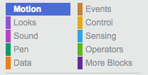

A Virtual LOLcat in Scratch
Table of Contents
1 An introduction to Scratch
Scratch is a programming language that can be used to make small programs and games. Above is the Graphical User Interface (GUI) for Scratch. A GUI is how the a user interacts with software.
Learn It
- The Scratch GUI is split into 4 sections
- These are listed below
- The key areas are:
- The Blocks Palette
- The Scripts Area
- The Stage
- The Sprite List
Code It
If you've used Scratch before and already have an account, then you can skip this section.
- Goto THIS LINK to the Scratch website
- Click on the
Join Scratchbutton in the menu bar.
- Fill in the details required. Be sure to pick a username and password you will remember.
- You might need to use your teacher's email address when you register.
- Once you are logged in, click on the
Createbutton in the menu bar.
- Now we can name our file. Call it
Practice Scripts
- Scratch works by dragging blocks of code from the blocks palate into the script area. These blocks then can be stacked to create scripts.
- Let's make a simple Script. From the Blocks Palate, choose
Events

- Now, click and drag the following block on to the Scripts Area.
- Next choose the
Looksscripts from the menu. - Click and drag the
say Hello! for 2 secsblock and snap it to theWhen flag clickedblock.
Run It
- To run our Scratch script, you just need to click on the
Green Flagin the Stage area.
Badge It - Silver
- Try changing what the cat says and how long it says it for.
Code It
- Now let's try something a little more complicated.
- Delete your current script by picking it up and dragging it back to the Blocks Pallette.
- We're going to make the cat grow. You'll need to search through the Blocks Pallette to find the appropriate blocks, and build the script as it's shown below.
Run It
- Click on the
Green Flagin the Stage area.
Badge It - Gold
- Try to change the script so that after the cat has grown, it says "IM SHRINKIN" and then returns to it's regular size.
- HINT: You can use negative numbers in Scratch.
Badge It - Platinum
- Try an experiment with getting the cat to move around.
- To get your platinum badge you need to make the cat move around in a large circle.
- You'll probably want to look into using a loop to achieve this.